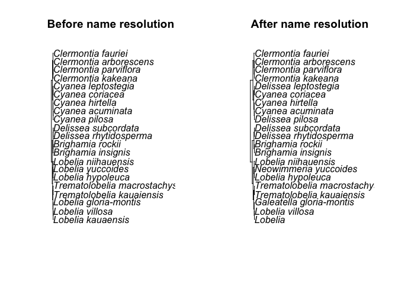

Download the PDF of the presentation
The R Script associated with this page is available here. Download this file and open it (or copy-paste into a new script) with RStudio so you can follow along. ** Sorry, this download is not currently working - please follow the code below**
###############################################
# Example use of TNRS web interface
# By: Naim Matasci & Brad Boyle (bboyle@email.arizona.edu)
# Date: Jan. 5, 2017
###############################################
library(ape)
#Tree topology from Ackerly, D. 2009. Conservatism and diversification of plant functional traits: Evolutionary rates versus phylogenetic signal. PNAS 106:19699--19706.
lobelioids.string<-'((((((Lobelia_kauaensis,Lobelia_villosa),Lobelia_gloria-montis),(Trematolobelia_kauaiensis,Trematolobelia_macrostachys)),((Lobelia_hypoleuca,Lobelia_yuccoides),Lobelia_niihauensis)),((Brighamia_insignis,Brighamia_rockii),(Delissea_rhytidosperma,Delissea_subcordata))),((((Cyanea_pilosa,Cyanea_acuminata),Cyanea_hirtella),(Cyanea_coriacea,Cyanea_leptostegia)),(((Clermontia_kakeana,Clermontia_parviflora),Clermontia_arborescens),Clermontia_fauriei)));'
#Transform the newick sting into an ape phylo object
tree<-read.tree(text=lobelioids.string)
#Obtain the taxa names
old.names<-tree$tip.label
#Change the underscore characters into blank spaces
old.names<-gsub('_',' ',old.names)
# Add an integer identifier to each name
# I've turned the names vector into a two column data frame, but you
# could use a matrix if you prefer
old.names.df <- as.data.frame(old.names)
old.names.df[,2] <- old.names.df[,1]
old.names.df[,1] <- seq(1:nrow(old.names.df))
colnames(old.names.df) <- c("id","Name_submitted")
# Write names and IDs to tab-delimitted file without headers
# A CSV file would also work
write.table(old.names.df, file="oldnames.csv",
row.names=FALSE, col.names=FALSE, sep=",")
#############################################
# STOP HERE AND COMPLETE THE FOLLOWING MANUAL
# STEPS BEFORE CONTINUING
#
# 1. Upload & process names file with TNRS web interface
# (http://tnrs.iplantcollaborative.org/TNRSapp.html)
# a. Edit "Name processing settings" on right
# i. Select sources.
# IMPORTANT! If you choose "TPL", make sure you also
# choose ILDIS and GCC. These three together have the same
# content as The Plant List (www.theplantlist.org)
# b. Select tab "Upload and Submit List"
# c. Check box "My file contains an identifier as first column"
# d. Choose file, enter email, and submit
#
# 2. Download results when ready (you will be notified by email)
# a. Select tab "Retrieve Results"
# b. Enter your email and submission key (from notification email)
# c. Inspect results. When in doubt, use the hyperlinks to research
# names at the original source. If you select alternative matches,
# these will be downloaded instead as the best match.
# d. Download the results, with the following options:
# i. Best matches only
# ii. Detailed download format
# iii. UTF-8
# iv. Rename download file if you wish
# v. Save the file to this directory
#
# TIP: try using different source to see how they affect you names
# before and after
############################################## Import the TNRS results file as a tab-delimitted text file with headers
# Here we are assuming the default file name supplied by TNRS
tnrs.results.filename <- "tnrs_results.txt"
tnrs.results <- read.table(tnrs.results.filename, header=T, sep="\t")
# Merge the old and new names into single data frame, by id
new.names.df <- tnrs.results[, c("user_id", "Name_matched", "Accepted_name")]
names <- merge(old.names.df, new.names.df, by.x=c("id"), by.y=c("user_id"))
names <- data.frame(lapply(names, as.character), stringsAsFactors=FALSE)
# Add a new column to keep clear the distinction between the name matched,
# the accepted name and the final name used
# Set it to the accepted name to start
names$Final_name <- names$Accepted_name
# If TNRS did not return any accepted name (no match, or name is already accepted),
# use the final name instead
# WARNING:
# You might want to research the matched name instead of using it blindly!
names[names[,c("Accepted_name")]=="",c("Final_name")] <-
names[names[,c("Accepted_name")]=="",c("Name_matched")]
# Save the old tree for comparison
tree.old <- tree
#The old taxa names are replaced with the corrected taxa names
tree$tip.label<-names[,c("Final_name")]
# Set up mutliplot
par(mfrow=c(1,2))
# Plot the original tree with old names
plot(tree.old, main="Before name resolution")
# Plot the tree with resolved names
plot(tree, main="After name resolution")###############################################
# Example use of TNRS api
# By: Naim Matasci
###############################################
library(ape)
library(rjson)
library(RCurl)
tnrs.api<-'http://tnrs.iplantc.org/tnrsm-svc'
#Tree topology from Ackerly, D. 2009. Conservatism and diversification of plant functional traits: Evolutionary rates versus phylogenetic signal. PNAS 106:19699--19706.
lobelioids.string<-'((((((Lobelia_kauaensis,Lobelia_villosa),Lobelia_gloria-montis),(Trematolobelia_kauaiensis,Trematolobelia_macrostachys)),((Lobelia_hypoleuca,Lobelia_yuccoides),Lobelia_niihauensis)),((Brighamia_insignis,Brighamia_rockii),(Delissea_rhytidosperma,Delissea_subcordata))),((((Cyanea_pilosa,Cyanea_acuminata),Cyanea_hirtella),(Cyanea_coriacea,Cyanea_leptostegia)),(((Clermontia_kakeana,Clermontia_parviflora),Clermontia_arborescens),Clermontia_fauriei)));'
#Transform the newick sting into an ape phylo object
tree<-read.tree(text=lobelioids.string)
#Obtain the taxa names
old.names<-tree$tip.label
#Change the underscore characters into blank spaces
old.names<-gsub('_',' ',old.names)
#Transforms the vector into a string
old.names<-paste(old.names,collapse=',')
#The string needs to be URL-encoded
old.names<-curlEscape(old.names)
#Send a request to the TNRS service
url<-paste(tnrs.api,'/matchNames?retrieve=best&names=',old.names,sep='')
tnrs.json<-getURL(url)
#The response needs to be converted from JSON
tnrs.results<-fromJSON(tnrs.json)
#The corrected names are extracted from the response
names<-sapply(tnrs.results[[1]], function(x) c(x$nameSubmitted,x$acceptedName))
names<-as.data.frame(t(names),stringsAsFactors=FALSE)
#If TNRS did not return any accepted name (no match, or name is already accepted), the submitted name is retained
names[names[,2]=="",2]<-names[names[,2]=="",1]
# Save the old tree so we can compare
tree.old <- tree
#The old taxa names are replaced with the corrected taxa names
tree$tip.label<-names[,2]
# Set up mutliplot
par(mfrow=c(1,2))
# Plot the original tree with old names
plot(tree.old, main="Before name resolution")
# Plot the tree with resolved names
plot(tree, main="After name resolution")
###############################################
# Really diabolical example use of TNRS web interface to scrub
# Al Gentry plot data
#
# By: Brad Boyle (bboyle@email.arizona.edu)
# Date: Jan. 5, 2017
###############################################
# Read in the plot data
# Here we are using the Alwyn Gentry 0.1 ha transect CERROOLU, from
# cloud forest in Cerro Olumo, Nicaragua, saved as a CSV file. Source:
# http://www.mobot.org/mobot/research/gentry/welcome.shtml
rawdata <- read.csv("CERROOLU.csv", header=TRUE)
# Have a look at the data:
rawdata[1:12,]
# Note the separate columns for FAMILY, GENUS, and SPECIES. Also that
# SPECIES is actually specific epithet, not the full species name.
# Note also (1) use of all caps (harder for the TNRS parser
# to separate & classify the name parts), (2) presence of morphospecies (e.g.,
# Desmopsis M1), (3) morphospecies determined to family only (e.g.,
# Acanthaceae M1 M1), and (4) rampant misspellings (trust me)
# Lets pull just the names and add some columns
raw.names <- rawdata[,2:4]
colnames(raw.names) <- c("famly.orig", "genus.orig", "sp.epithet.orig")
# Form the full species name
raw.names$species.orig <- paste(raw.names$genus.orig, raw.names$sp.epithet.orig, sep=" ")
# Have a look at the first few records.
raw.names[1:12,]
# Looks like we need to include family to disambiguate morphospecies such
# as "Acanthaceae M1 M1" which are identified to family only. We can identify
# these rows by the presence of a numeralspecies.orig
raw.names[grep("[[:digit:]]", raw.names$genus.orig), c("species.orig")] <- paste(
raw.names[grep("[[:digit:]]", raw.names$genus.orig), 1],
raw.names[grep("[[:digit:]]", raw.names$genus.orig), 2],
raw.names[grep("[[:digit:]]", raw.names$genus.orig), 3],
sep=" ")
# That's better:
raw.names[1:12,]
# Let's put just the unique old names in their own data frame
# This step is optional, but if you have a very large number of records it
# will save TNRS processing time to process unique names only. Also,
# it is easier to inspect the results
unique.names <- unique(raw.names$species.orig)
# We could upload just the names, but let's add an ID just to be safe
unique.names <- as.data.frame(unique.names)
unique.names[,2] <- unique.names[,1]
unique.names[,1] <- seq(1:nrow(unique.names))
colnames(unique.names) <- c("id","Name_submitted")
# Write names and IDs to tab-delimitted file without headers
# A CSV file would also work
write.table(unique.names, file="unique_names.csv",
row.names=FALSE, col.names=FALSE, sep=",")
##################################################
# STOP HERE AND PROCESS THE NAMES MANUALLY USING THE TNRS
#
# 1. Upload & process names file with TNRS web interface
# (http://tnrs.iplantcollaborative.org/TNRSapp.html)
# a. Edit "Name processing settings" on right
# i. Select source "Tropicos" only. Why? Because Tropicos is
# the best authority for New World tropical plant names
# b. Select tab "Upload and Submit List"
# c. Check box "My file contains an identifier as first column"
# d. Choose file, enter email, and submit
#
# *** You will be notified by email when results are ready ***
#
# 2. Inspect the results!!! Especially, anything with a flag,. Also select
# alternative species matches if applicable. For genera of morphospecies
# this isn't usually necessary.
# a. Select tab "Retrieve Results"
# b. Enter your email and submission key (from notification email)
# c. Inspect & research. When in doubt, use the hyperlinks to research
# names at the original source. If you select alternative matches,
# these will be downloaded instead as the best match. Research
# any name with Taxonomic Status <> Accepted or Synonym.
#
# NOTE 1. The TNRS could not resolve "SARCORHACHIS NARANPANUM".
# Following the link to Tropicos takes you to the page for the genus
# "Sarcorhachis". Click on the link "Subordinate Taxa". Scrolling down the
# list of species, it appears that the submitted name is an extremely garbled
# misspelling of "Sarcorhachis naranjoana". At this point, you could either fix
# the name in the existing TNRS results, or change the spelling in the data frame
# of original names and re-submit to the TNRS. Let's just fix it ourselves.
#
# NOTE 2. We have one "Illegitimate" name in our list: "Lasianthea fruticosa".
# Tropicos reports that this is a spelling variant of "Lasianthaea fruticosa",
# But for some reason they do not correct it. As a spelling variant, it should be
# marked Invalid, not Illegitimate. In any case, we'll fix it later.
#
# NOTE 3: We have one "Invalid" name on our list: "Tetrapteris schiedeana".
# This is a spelling variant which was never formally published. Tropicos
# reports that the name can be "automatically correctable to Tetrapterys",
# but for some reason they do not do so. Let's correct it ourselves.
#
# 3. Download the results, with the following options:
# a. Best matches only
# b. Detailed download format
# c. UTF-8
# d. Rename download file; let's call it "unique_names_scrubbed.txt"
# e. Save the file to this directory
#
##################################################
# Import the TNRS results file as a tab-delimitted text file with headers
# Here we are assuming the default file name supplied by TNRS
tnrs.results.filename <- "unique_names_scrubbed.txt"
tnrs.results <- read.table(tnrs.results.filename, header=T, sep="\t")
# Merge the old and new names into single data frame, by id
# Lets include family and unmatched terms, as well as the matched species name.
# Also let's save authorities. Just because.
new.names.df <- tnrs.results[, c("user_id",
"Name_matched_accepted_family", "Name_matched",
"Name_matched_author", "Name_matched_rank",
"Accepted_name_family", "Accepted_name", "Accepted_name_author",
"Unmatched_terms", "Taxonomic_status"
)]
names <- merge(unique.names, new.names.df, by.x=c("id"), by.y=c("user_id"))
names <- data.frame(lapply(names, as.character), stringsAsFactors=FALSE)
# Add some new columns to hold the final family, taxon, morphospecies
# and author. Start by pasting in the accepted names
names$family.final <- names$Accepted_name_family
names$name.final <- names$Accepted_name
names$authority.final <- names$Accepted_name_author
names$morphospecies.final <- ""
names[is.na(names)] <- ""
# Let's have a look at just the names:
names[ 1:12, c("Name_submitted", "Name_matched", "Accepted_name", "name.final")]
# If TNRS did not return any accepted name (no match, or name is already accepted),
# use the final name instead
names[names[,c("Accepted_name")]=="", c("family.final")] <-
names[names[,c("Accepted_name")]=="", c("Name_matched_accepted_family")]
names[names[,c("Accepted_name")]=="", c("name.final")] <-
names[names[,c("Accepted_name")]=="",c("Name_matched")]
names[names[,c("Accepted_name")]=="", c("authority.final")] <-
names[names[,c("Accepted_name")]=="",c("Name_matched_author")]
# Check again
names[ 1:12, c("Name_submitted", "Name_matched", "Accepted_name", "name.final")]
# Let get rid of authority for names only identified to family or genus
names[names[, c("Name_matched_rank")]=="family" ,c("authority")] <- ""
names[names[, c("Name_matched_rank")]=="genus" ,c("authority")] <- ""
# Fix the three invalid/illegitimate or unmatched names:
names[names[, c("Name_submitted")]=="LASIANTHEA FRUTICOSA" , c("family.final")] <- "Asteraceae"
names[names[, c("Name_submitted")]=="LASIANTHEA FRUTICOSA" , c("name.final")] <- "Lasianthaea fruticosa"
names[names[, c("Name_submitted")]=="LASIANTHEA FRUTICOSA" , c("authority.final")] <- "(L.) K.M. Becker"
names[names[, c("Name_submitted")]=="SARCORHACHIS NARANPANUM" , c("family.final")] <- "Piperaceae"
names[names[, c("Name_submitted")]=="SARCORHACHIS NARANPANUM" , c("name.final")] <- "Sarcorhachis naranjoana"
names[names[, c("Name_submitted")]=="SARCORHACHIS NARANPANUM" , c("authority.final")] <- "(C. DC.) Trel."
names[names[, c("Name_submitted")]=="TETRAPTERIS SCHIEDEANA" , c("family.final")] <- "Malpighiaceae"
names[names[, c("Name_submitted")]=="TETRAPTERIS SCHIEDEANA" , c("name.final")] <- "Tetrapterys schiedeana"
names[names[, c("Name_submitted")]=="TETRAPTERIS SCHIEDEANA" , c("authority.final")] <- "Schltdl. & Cham."
# Finally, let's put morphospecies back together:
names[is.na(names)] <- ""
names$morphospecies.final <- paste(names$name.final, names$Unmatched_terms, sep=" ")
# Trim whitespace. You may need to use the fancier version if you have R earlier than 3.2.0
names$morphospecies.final <- trimws(names$morphospecies.final)
# Check the final result:
names[ , c("Name_submitted", "Name_matched_accepted_family", "Name_matched", "Accepted_name_family", "Accepted_name",
"family.final", "name.final", "morphospecies.final"
)]
# Pretty good, but not quite perfect. Note that "real" specific epithets that did not
# match (as opposed to morphospecies names) weren't dumped to Unmatched_terms.
# So you'll still need to do some special handling to reform a morphospecies for such
# name. (E.g., "STEMMADENIA DONNELL-SMITHII"; try extracting the unmatched part
# and append to the matched genus: "Stemmadenia DONNELL-SMITHII"). And you'll
# need to remove the message "No suitable matches found." that the TNRS pastes
# into complete non-matches
# Final step: I'll leave it to you join your final names back to the original
# data file.